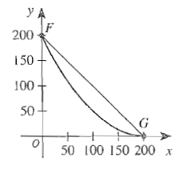

For ACT Students
The ACT is a timed exam...60 questions for 60 minutes
This implies that you have to solve each question in one minute.
Some questions will typically take less than a minute a solve.
Some questions will typically take more than a minute to solve.
The goal is to maximize your time. You use the time saved on those questions you
solved in less than a minute, to solve the questions that will take more than a minute.
So, you should try to solve each question correctly and timely.
So, it is not just solving a question correctly, but solving it correctly on time.
Please ensure you attempt all ACT questions.
There is no negative penalty for a wrong answer.
For JAMB Students
Calculators are not allowed. So, the questions are solved in a way that does not require a calculator.
Evaluate these functions for each value of the independent variable.
(15.) ACT The function $f(x)$ is shown below with several points labeled.
Another function, $g(x)$ is defined such that $g(x) = -[f(x) - 3]$.
What is $g(4)$?
(19.) ACT The curve $y = 0.005x^2 - 2x + 200$ for $0 \le x \le 200$ and the line segment from
$F(0, 200)$ to $G(200, 0)$ are shown in the standard $(x, y)$ coordinate plane below.

What is the $y-coordinate$ for the point on the curve with $x-coordinate$ $20$?
$g(-1)$
This means that we have to substitute $-1$ for $x$
$
g(x) = \dfrac{x}{\sqrt{1 - x^2}} \\[3ex]
g(-1) = \dfrac{-1}{\sqrt{1 - (-1)^2}} \\[3ex]
(-1)^2 = -1 * -1 = 1 \\[3ex]
g(-1) = \dfrac{-1}{\sqrt{1 - 1}} \\[3ex]
g(-1) = \dfrac{-1}{\sqrt{0}} \\[3ex]
g(-1) = \dfrac{-1}{0} \\[3ex]
g(-1) = undefined
$
Can you divide "anything" by "nothing"?
Can you create "anything" out of nothing?
Only GOD can do that!
$g(5)$
This means that we have to substitute $5$ for $x$
$
g(x) = \dfrac{x}{\sqrt{1 - x^2}} \\[3ex]
g(5) = \dfrac{5}{\sqrt{1 - 5^2}} \\[3ex]
g(5) = \dfrac{5}{\sqrt{1 - 25}} \\[3ex]
g(5) = \dfrac{5}{\sqrt{-24}}
$
$g(5)$ is not a real number.
It is an imaginary number.
All the numbers we shall cover in this topic are only real numbers.
$g\left(\dfrac{2}{3}\right)$
This means that we have to substitute $\dfrac{2}{3}$ for $x$
 For ACT Students
For ACT Students